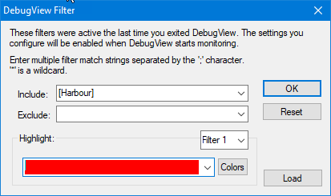
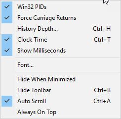
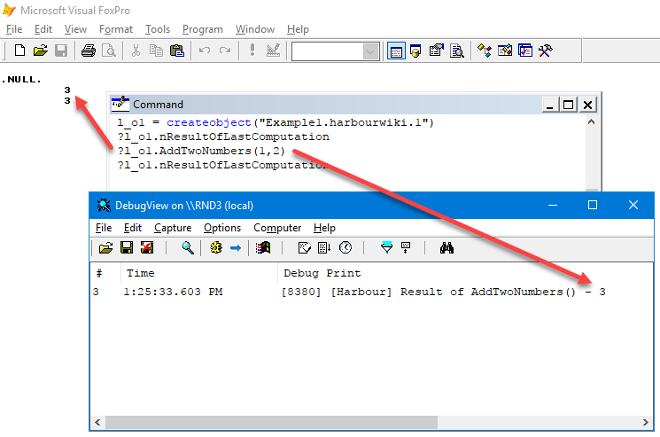

Windows COM Servers in Harbour. How to use Harbour from different languages.
 Author: Eric Lendvai
Author: Eric Lendvai
Table of Contents
- Revision History
- Prerequisites
- Introduction
- Adding a BuildCOM.bat tool to HarbourTools
- Example 1. Simple class
- Example 2. Shared Object Reference
- Using the COM objects from VFP (32 bit)
- Using the COM objects from PowerShell (32 bit and 64 bit)
- Debugging Com Server
- Conclusion
Revision History
| 02/06/2019 | Added instructions to include the file libgcc_s_dw2-1.dll when creating 32 bit Harbour DLL. |
Prerequisites
Setup your development environment and use all the tools created in the article How to Install Harbour on Windows.
You should already know how COM objects work, how to use them from other languages, like VFP, VB or PowerShell.
Introduction
One
of the main reasons to use Harbour on Windows, is the ability to use
and create COM objects. This allow you to have Object Oriented language
interoperability.
For VFP developers, this could be a mean to add Harbour components to your VFP app, or add to Harbour VFP COM objects. But you can also do the same with C++, VB, C#, and even Python (under Windows only).
For VFP developers, this could be a mean to add Harbour components to your VFP app, or add to Harbour VFP COM objects. But you can also do the same with C++, VB, C#, and even Python (under Windows only).
But also why in Harbour? Simple, Harbour will
create C code, that is extremely fast (when compiled without PCODE), and
quite secure against reverse engineering. You will also be able to
create 32 and 64 bit DLLs, without any source code change. And you have
access to xbase syntax and have full Object Oriented support and
multithreading.
You can find on GitHub all the source code to add Windows native support, including COM. Go here for the repo, and here for the main example for creating a COM server.
But
all that material can be overwhelming, since there are multi ways to
create the COM interface, and there are no clear steps and environment
to actually create your first COM server.
In this article I
will focus on creating, compiling, testing COM objects where you will
have well defined methods and properties. These are going to be UI free
objects. In Harbour you could create COM objects that accept any calls
and dynamically respond to calls. But that is more of an advanced and
rarely used scenario.
The first example will be your
typical COM object, some methods and properties. Each instances you
create of that COM will stand by itself, and not share any values with
other instances, even when being created from the same process. Example
2, will not be as useful, but will show how you code share properties
between instance of the same COM, when create from the same
host/process.
We are going to focus of in-process COM
objects, meaning that any memory allocations made by the Harbour COM
object is going to happen inside the calling program. In-process calls
are the fastest for execution.
Adding a BuildCOM.bat tool to HarbourTools
Let's add the following batch file to the c:\HarbourTools folder (See Prerequisites).
As for the BuildEXE program, this script file will need to be called from your 32 or 64 bit Harbour Terminal.
For example, in the terminal use the following: HarbourMinGW32 C:\HarbourTestCode-32>buildcom Harbour_Com_Server_Example_1
This will unregister your previous DLL, if needed, compile, and re-register the new COM.
You can learn more about how the batch file by reading the tooltips.
| File: BuildCOM.bat |
@echo offclsif %1. == . goto MissingParameterif %HB_PATH%. == . goto MissingHB_PATH if exist %1.dll ( regsvr32 %1.dll /u /s del %1.dll)if exist %1.dll ( echo Could not unregister and delete the previous instance of the dll. echo Ensure all references are cleared, meaning clear all created object from any other apps/languages.) else ( hbmk2 %1.hbp %2 %3 %4 %5 %6 if errorlevel 0 ( if exist %1.dll ( echo. echo No Compilation Errors regsvr32 %1.dll /s if errorlevel 0 ( echo. echo No Registration Errors ) else ( echo. echo Failed COM Registration if errorlevel 1 echo Invalid Argument if errorlevel 2 echo OleInitialize Failed if errorlevel 3 echo LoadLibrary Failed if errorlevel 4 echo GetProcAddress failed if errorlevel 5 echo DllRegisterServer or DllUnregisterServer failed. ) ) else ( echo. echo Compilation Failed ) ) else ( echo. echo Compilation Error if errorlevel 1 echo Unknown platform if errorlevel 2 echo Unknown compiler if errorlevel 3 echo Failed Harbour detection if errorlevel 5 echo Failed stub creation if errorlevel 6 echo Failed in compilation (Harbour, C compiler, Resource compiler) if errorlevel 7 echo Failed in final assembly (linker or library manager) if errorlevel 8 echo Unsupported if errorlevel 9 echo Failed to create working directory if errorlevel 19 echo Help if errorlevel 10 echo Dependency missing or disabled if errorlevel 20 echo Plugin initialization if errorlevel 30 echo Too deep nesting if errorlevel 50 echo Stop requested ))goto End:MissingHB_PATHecho Run a HarbourTerminal Batch file first.goto End:MissingParameterecho Missing Parameter:End
Example 1. Simple class
The
following program is used to create a single object DLL. At this time,
it is not possible to package more than one object/class definition per
DLL files with Harbour.
This COM will have its own set of properties for every instance created, which is the most typical type of creating COM objects.
Let's review to code below:
On
line 4 we define the Objects Class Name. Once the DLL is registered
via, regsvr32, this is the name you will use with
CreateObject("Example1.harbourwiki.1") or similar commands in the
calling program. In Windows you could actually make up almost any names,
the dots (.) are not required, but highly recommended.
On
line 5 we must assign a unique UUID. For readability of the code, we are
using compiler statements in both lines 4 and 5.
The Harbour.wiki site will automatically create for you a new UUID in
this sample code. Simply reloading this page will display a new UUID.
Most
of the magic in creating a COM server in Harbour comes from line 12. In
this line we use a "Code Block", which is a Clipper (the origins of
Harbour) base concept, to have each instantiated object have its one
memory space. The example 2, further down this article will have a
different way to call Win_oleServerInit. This is also where we link the
outside definition of the COM object to a Harbour Class (define in the
same PRG). But since a DLL can only host a single object definition, use
a single name in place of "MyHarbourClassExample". So the PROCEDURE
DllMAin() is the equivalent of a Main() C program for the DLL. It is the
way the Objects gets initialized.
What makes your DLL unique will be the definition of the Harbour Class on line 16.
In
Harbour, we have to list all the Properties, via VAR for example, and
Methods via METHOD, in the code between CLASS and ENDCLASS.
Like
VFP the language is case insensitive. I use upper case here just for
readability. This feature of the language, case insensitivity, makes it
so nice not to deal with some bad coding standards where someone use the
same text with different casing to mean different things.
Afterwards,
on line 24, we actually define the actual code for the Echo method.
Please not hat the word "CLASS" with the name MyHarbourClassExample, is
the way to make it clear to the compiler which class this method
definition belongs to. In Harbour, you could spread the code for a class
in multiple PRGs, as long as the CLASS keyword is used in the METHOD
command. So this can help to create some really big classes, but coded
in smaller PRGs. There is no concept of "SET PROCEDURE", like in VFP, in
Harbour. All functions, procedure and methods are global to an entire
EXE of DLL, once linked. To create a routine that should only be know to
its PRG file only, the leading word STATIC need to be used. This is the
same behavior as in C.
To help debug your program, I
added the definition of a routine "SendToDebugView" defined on line 45.
This use the Microsoft Windows Sysinternals tool DebugView. In a future article I will demonstrate how to debug your code using a graphical debugger of a running DLL.
The
SendToDebugView function is not an entry point (method) of the COM
object. It is a support function that your Harbour Code can call. In
turn that function, calls a C routine,OUTPUTDEBUGSTRING, that is also
defined in this PRG. One of the other wonderful things is Harbour is
that you can mix C code with your Harbour code. This is done using the
compiler command from line 87 to line 96.
| File: Harbour_Com_Server_Example_1.prg |
// Copyright 2019 Eric Lendvai, San Diego County, CA, USA// Permission is granted to use this source code for any use.#define CLS_Name "Example1.harbourwiki.1"
Next,
create the file Harbour_Com_Server_Example_1.hbp. It should also be
placed, along with Harbour_Com_Server_Example_1.prg, in the folder
C:\HarbourTestCode-32, to create 32 bit DLLs, or the folder
C:\HarbourTestCode-64, to create 64 bit DLLs. Use the appropriate batch
from from your C:\HarbourTools folder, like for example
HarbourTerminalMinGW32.bat, to open a Harbour Terminal, then issue the
command: BuildCOM Harbour_Com_Server_Example_1
That HBP file is the equivalent for a Makefile of C, or a Project of VFP.
When using the mingw-w64 compiler (which includes the 32 bit compiler),
like we did during the install of Harbour, and if you are create your
own 32 bit DLLs, you must also distribute the file libgcc_s_dw2-1.dll,
which is originally in the c:\Program Files
(x86)\mingw-w64\i686-8.1.0-win32-dwarf-rt_v6-rev0\mingw32\i686-w64-mingw32\lib\
folder. Therefore, also place that file in the C:\HarbourTestCode-32
folder.
| File: Harbour_Com_Server_Example_1.hbp |
-hbdynvm-inc -OHarbour_Com_Server_Example_1 ${HB_PATH}\contrib\hbwin\hbolesrv.hbc ${HB_PATH}\contrib\xhb\xhb.hbc Harbour_Com_Server_Example_1.prg
Example 2. Shared Object Reference
The is the same kind of DLL source code as for Harbour_Com_Server_Example_1. The main difference is how line 12 is created.
This
COM will share the memory space for properties and methods. I would be
surprised if you would find a use for this approach, but it is still one
of the features of Harbour COM implementations.
Later on I provided some VFP code to help you visualize what using the two examples will generate.
For simplicity of code, I did not include the code to help you debug.
| File: Harbour_Com_Server_Example_2.prg |
// Copyright 2019 Eric Lendvai, San Diego County , CA, USA// Permission is granted to use this source code for any use.#define CLS_Name "Example2.harbourwiki.1"#define CLS_ID "{1ac85542-1aa7-11e9-8ee1-005056354306}"#include "hbclass.ch"PROCEDURE DllMain()//Shared Object Ref THIS IS NOT THE WAY MOST OTHER IMPLEMENTATIONS OF COM SERVERS ARE !!!win_oleServerInit( CLS_ID, CLS_Name, MyHarbourClassExample():new() )
As
for the first example, create the file
Harbour_Com_Server_Example_2.hbp. It should also be placed, along with
Harbour_Com_Server_Example_2.prg, in the folder C:\HarbourTestCode-32,
to create 32 bit DLLs, or the folder C:\HarbourTestCode-64, to create 64
bit DLLs. Use the appropriate batch from from your C:\HarbourTools
folder, like for example HarbourTerminalMinGW32.bat, to open a Harbour
Terminal, then issue the command: BuildCOM Harbour_Com_Server_Example_2
| File: Harbour_Com_Server_Example_2.hbp |
-hbdynvm#-inc-OHarbour_Com_Server_Example_2${HB_PATH}\contrib\hbwin\hbolesrv.hbc${HB_PATH}\contrib\xhb\xhb.hbcHarbour_Com_Server_Example_2.prg
Using the COM objects from VFP (32 bit)
Using
the 32 bit DLLs, the following VFP commands can be called from a VFP
PRG, or one by one in the VFP command window. It helps to demonstrate
how the Example 1 and 2 Harbour COM objects behaves from VFP.
You can review the VFP output by viewing the tooltips.
clear alll_o1 = createobject("Example1.harbourwiki.1")l_o2 = createobject("Example2.harbourwiki.1")l_o3 = createobject("Example2.harbourwiki.1")?l_o1.Echo("Hello World") //{{Note: Will output "Hello World"}}//?l_o1.Echo(date()) //{{Note: Will output the current date, but formatted as a datetime (strange behavior of the COM implementation).}}//?l_o1.GetOSName() //{{Note: Will output your OS info.}}//?l_o1.nResultOfLastComputation //{{Note: Will output .NULL.}}//?l_o1.AddTwoNumbers(1,2) //{{Note: Will output 3}}//?l_o1.nResultOfLastComputation //{{Note: Will output 3}}?l_o2.nResultOfLastComputation //{{Note: Will output .NULL.}}//?l_o3.nResultOfLastComputation //{{Note: Will output .NULL.}}//?l_o2.AddTwoNumbers(10,20) //{{Note: Will output 30}}//?l_o2.nResultOfLastComputation //{{Note: Will output 30}}//?l_o3.nResultOfLastComputation //{{Note: Will output 30}}//l_o2.AddTwoNumbers(11,22) //{{Note: Will have no output since we are not using the "?" command }}//?l_o3.GetResultOfLastComputation() //{{Note: Will output 33}}//release all like l_o*
Using the COM objects from PowerShell (32 bit and 64 bit)
Use
the following sample PowerShell commands to create and call the same
COM objects from the 32 or 64 bit PowerShell program.
Line 2 show you how to call the 32 bit PowerShell interpreter, and line 5 show how to call the 64 bit version.
#Method to test 32bit com:#>C:\Windows\SysWOW64\WindowsPowerShell\v1.0\powershell.exe#Method to test 64bit com:#>C:\Windows\System32\WindowsPowerShell\v1.0\powershell.exe $hb1 = New-Object -COMObject Example1.harbourwiki.1$hb1.echo("test")Clear-Variable hb1
Debugging Com Server
The easiest way to debug your code is to use DebugView and to make calls to SendToDebugView(cStep,xValue) described in the Harbour_Com_Server_Example_1.prg source file.
To also make it easier to not receive debugging messages from other Windows Program, set the Debug Filter as follows:

Options to use for example:

The following show you what DebugView would receive when some methods are called.

You can download DebugView from https://docs.microsoft.com/en-us/sysinternals/downloads/debugview
Conclusion
This
was a step by step guide to create, compile and test Harbour COM
objects. More articles are going to be available to describe more how
Classes work in Harbour and how the make files can be used to control
the generation of DLLs.
Please use the Send message to the Author for any corrections or enhancements.
The browser did not close this tab. It may have been opened directly instead of from the Articles list. Use Back to Articles.